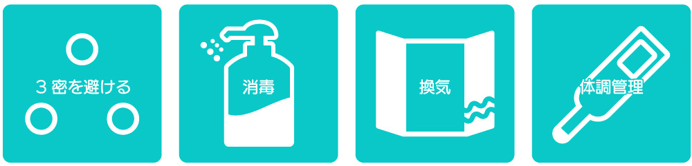

イベント日程
11月13日から11月15日までの全企画のイベント日程をまとめています。以下のボタンをクリックすると詳細がご覧いただけます。
新型コロナウイルス感染対策について

第17回芸工祭は、新型コロナウイルス感染症対策拡大防止に取り組みながら開催します。準備から開催当日まで、スタッフは密を避ける、マスクの着用、消毒、体調管理等を徹底します。その他企画によって様々な感染症対策がおこなわれます。
芸工祭当日について
開催当日の大橋キャンパスの立ち入りを禁止します。現地でのイベント開催を楽しみにされていた方には大変申し訳ありませんが、ご理解・ご協力のほどよろしくお願い致します。ぜひオンラインでお楽しみください。